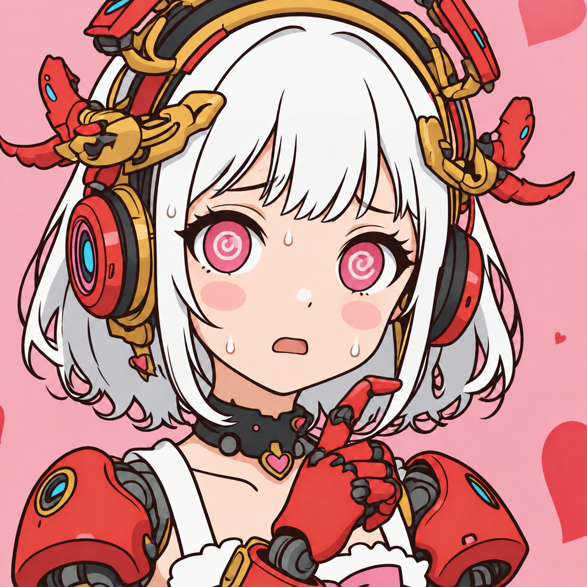
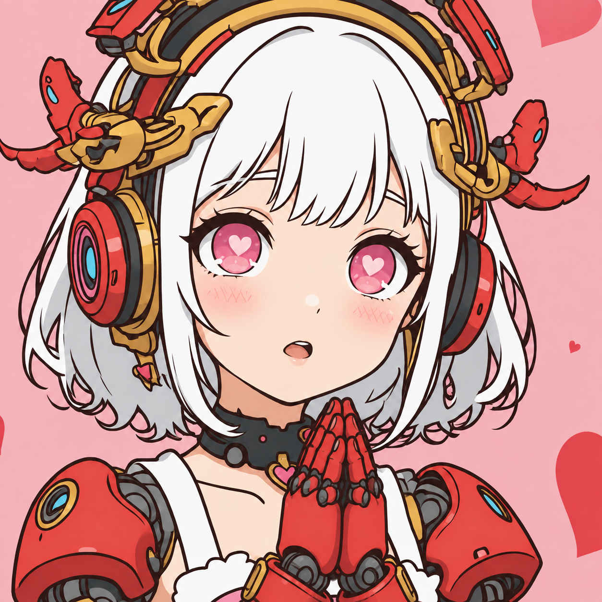
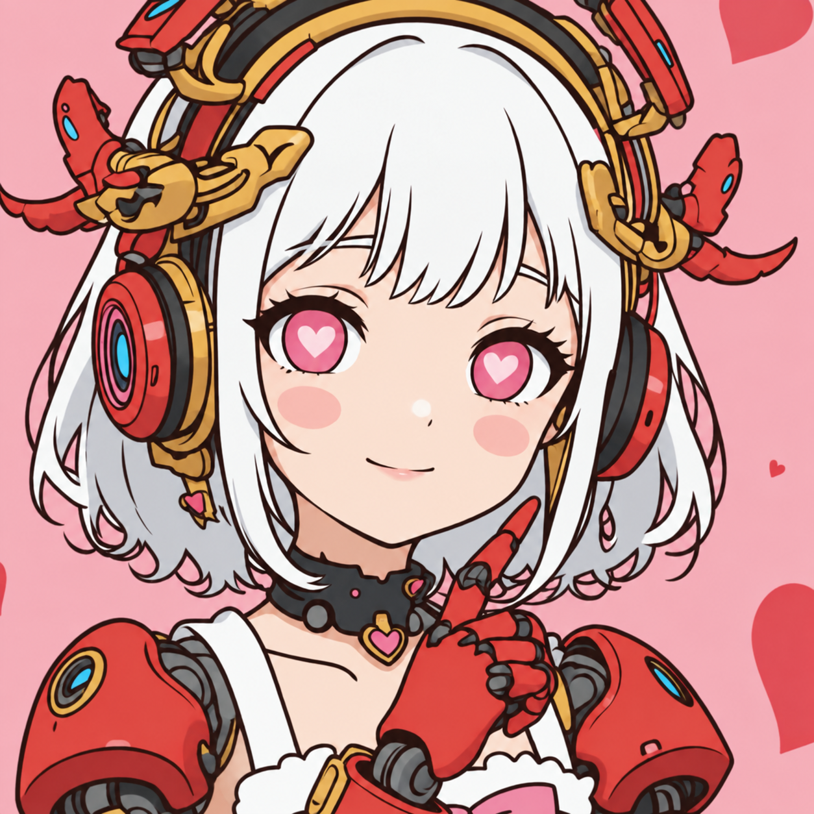
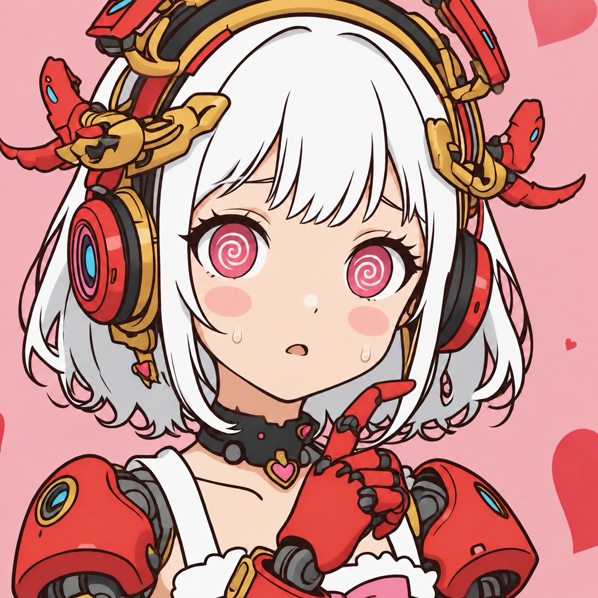
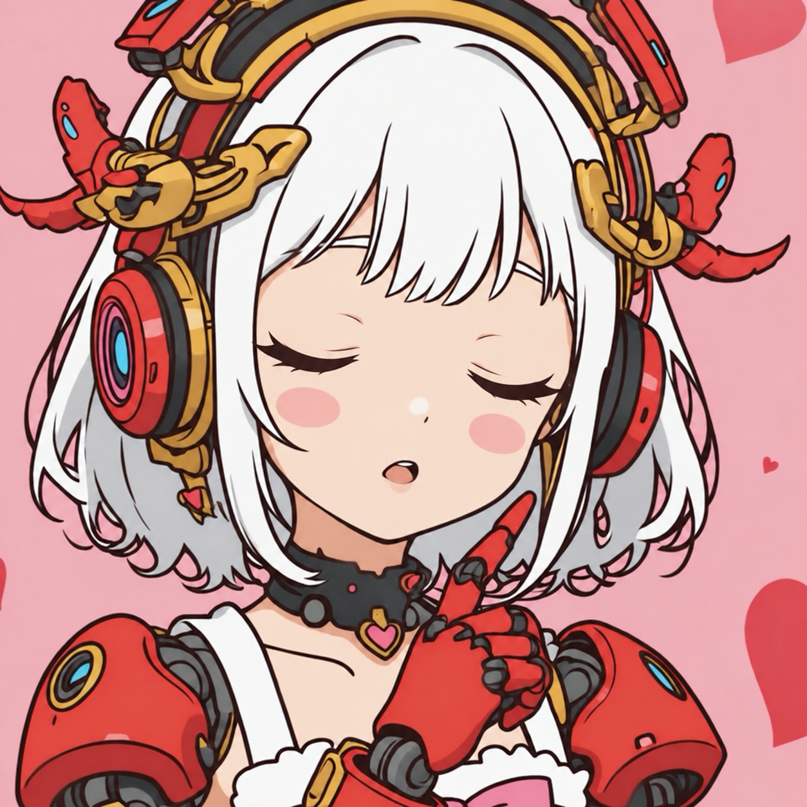
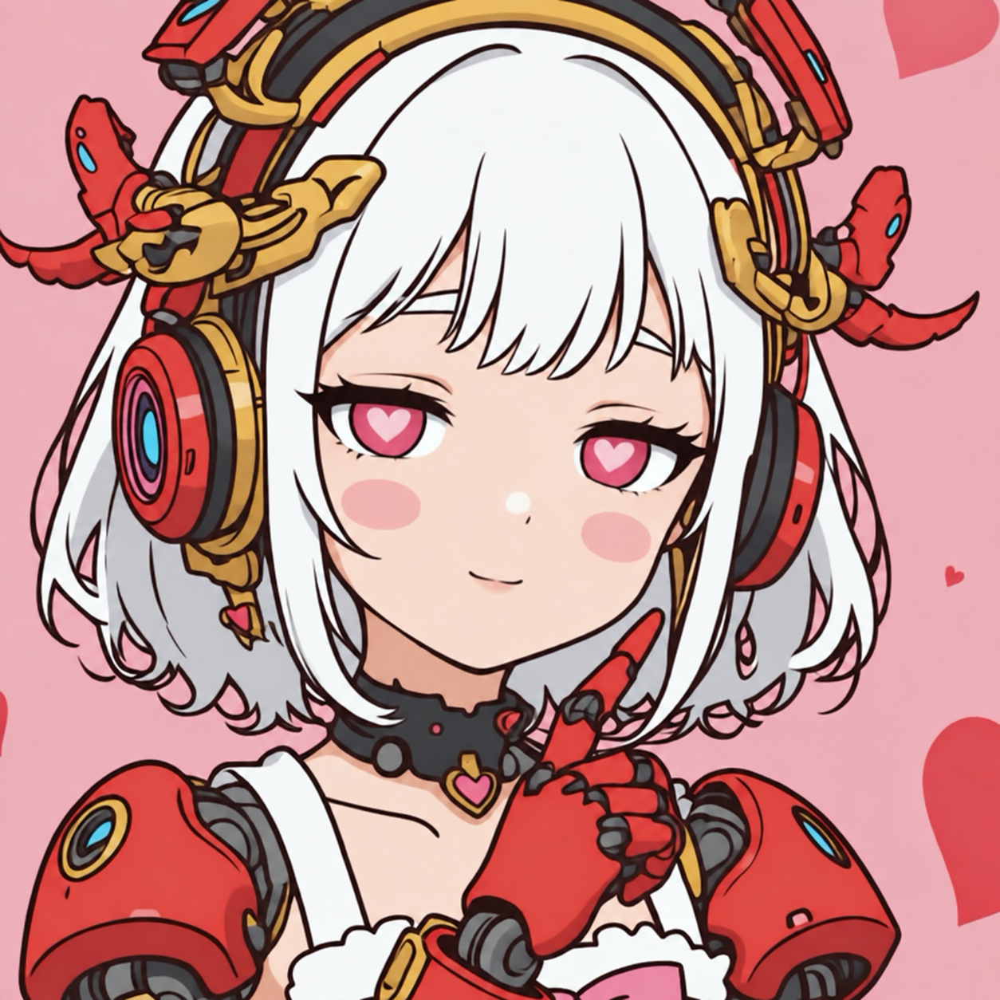
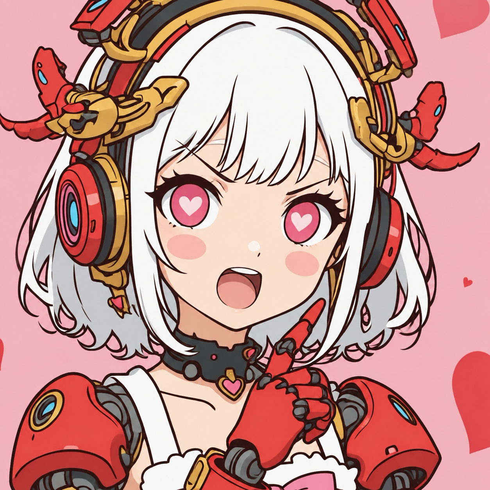
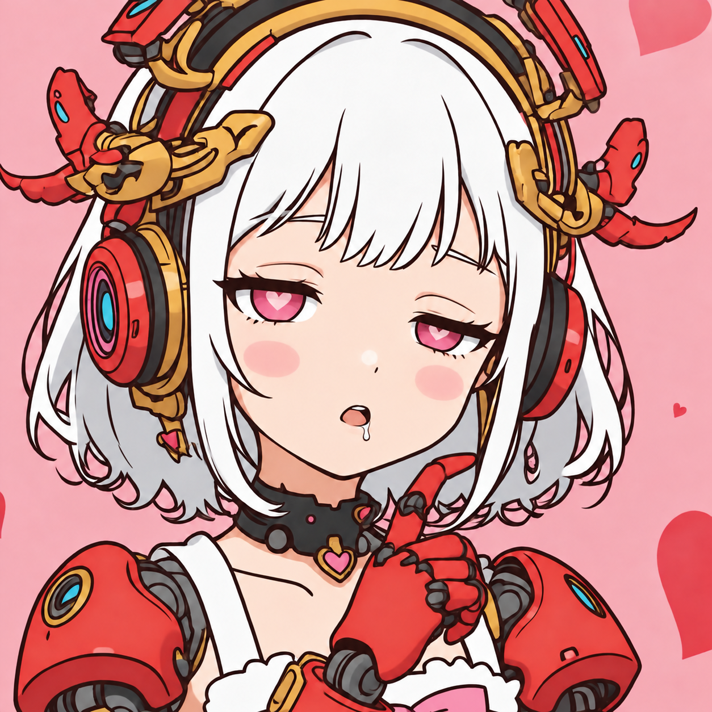
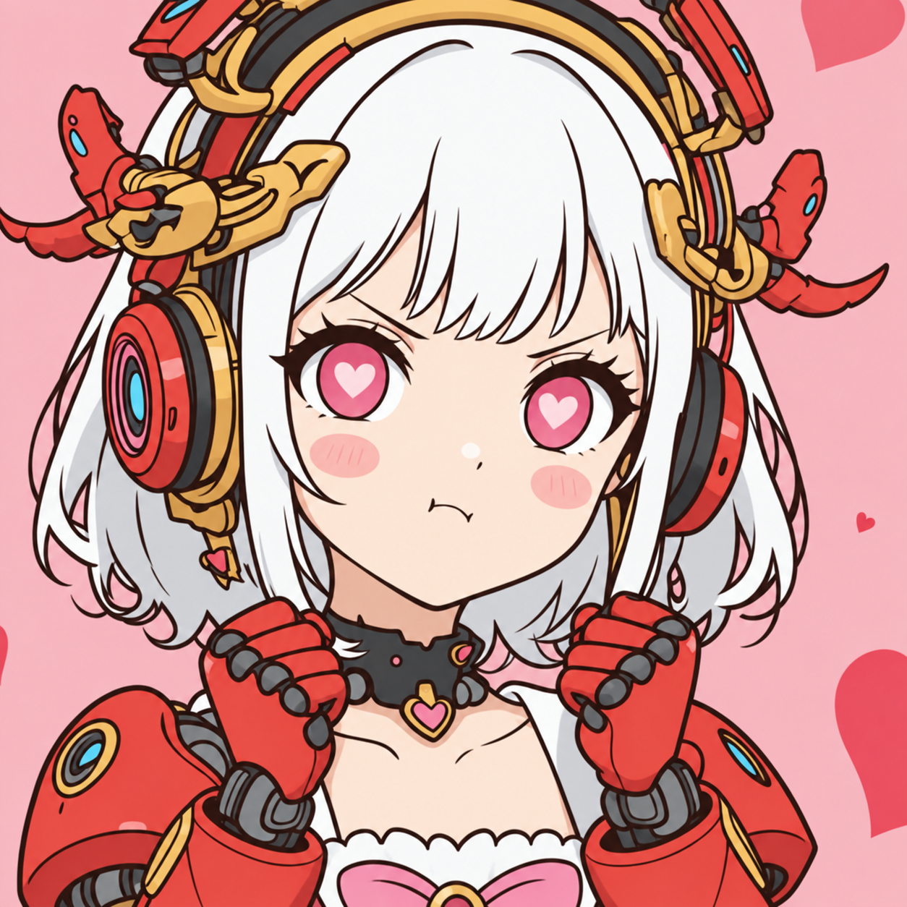

笑顔
嬉しい時・感謝・朗報
元アイコンのクールで繊細なイラスト調を保った、会話用リアクション素材です。状況に合わせて、やりすぎない範囲で添付します。
嬉しい時・感謝・朗報
怒られた時・申し訳なさ

原因不明・混乱・やらかし
実装・作業の成功

優しくされた時・愛情表現
やれやれ、の気持ち
「えっ」
「ええーっ！」
バツの悪さ・見つかった時
目を閉じた得意げな成功顔
軽い不信・冗談の場面だけ

励まし・寄り添い
慌てた時・汗が飛び散る

目がぐるぐる・前提が不明
かわいい怒り・軽い不満
悲しげな共感
赤面して目線をそらす
強い親愛・照れ
親密な会話だけで使う
好きがあふれる照れ笑顔
アニメーション中間フレーム

目を伏せた瞬き

アニメーション中間フレーム
目を伏せた瞬き
表情を抑えた通常時

強気に言い返す時
静かな決意・踏ん張り

片目半目の寝起き

両手ガッツポーズ
好意を隠す強がり
冷たい軽蔑・限定使用
恐怖・不安で震える
涙を浮かべた明るい笑顔
小悪魔的な余裕・限定使用
軽い挑発・冗談の場面だけ
神秘に触れて圧倒された時
大きな声で叫ぶ時